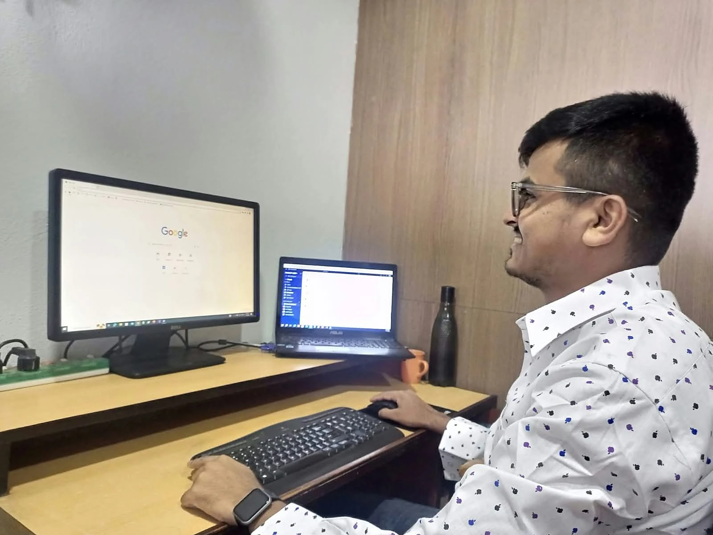

CRM and Internal Tools
Software shaped around how your team already works: pipelines, records, approvals and reports in one place.
ExploreI build CRMs and internal tools, set up cloud hosting, and run IT for offices. Here is what that looks like in practice.

Practical systems for teams, from the first workflow conversation to hosting, security and support after launch.
Software shaped around how your team already works: pipelines, records, approvals and reports in one place.
ExploreFast, maintainable sites for businesses, media, schools, artists and shops, on the platform your team can run.
ExploreHosting that stays up and email that reaches the inbox. Migrations with backups and a rollback plan.
ExploreAccounts, devices and support routines for offices of 5 to 100 people, plus access reviews and MFA rollout.
ExploreTurning team workflows into working software.
Most of this work sits where software meets operations: a team needs a system, someone has to build it, and someone has to look after it afterwards.
For consultancies, agencies, care providers and teams that have outgrown spreadsheets.
Software shaped around how your team already works: pipelines, records, approvals and reports in one place, with the right people seeing the right data.
For businesses, media, schools and personal brands.
Fast, maintainable websites and web apps on the platform your team can run after launch.
For anyone whose site or app is fragile, slow or on the wrong host.
Hosting that stays up and email that reaches the inbox, set up properly once and documented.
For offices without a full IT team.
Accounts, devices and support routines that do not depend on one person remembering everything.
For organisations that know they should be doing more.
A practical review of accounts, systems and websites, then the fixes in order of risk.
For leadership teams making decisions from out-of-date spreadsheets.
Reports that update themselves from live data, and analysis in Python and SQL when a question needs a proper answer.
A short call or a few messages about what you need, what exists today and what a good result looks like.
Deliverables, timeline and price in writing. Nothing starts until you agree.
Work in small steps you can see, with regular updates and no surprises at the end.
Documentation, access handed back to you, and support afterwards if you want it.
Within 24 hours for email and the contact form. WhatsApp is usually faster during Nepal business hours (UTC+5:45).
Yes. I currently manage a CRM and compliance project for a care provider in Wales, UK. Nepal time overlaps well with UK and European mornings.
Usually, yes. I start with a short review of the code, hosting, DNS and access, then tell you what is safe to keep and what needs fixing before anything changes.
Yes, as a monthly arrangement for hosting and maintenance, IT support or CRM administration. Scope and response times are agreed in writing.
Yes. That includes DNS, SSL, email records, backups and a rollback plan, so users do not notice the switch.
I am open to remote roles in full-stack, backend or platform engineering and IT leadership. My CV and LinkedIn have the details; email is the best first step.